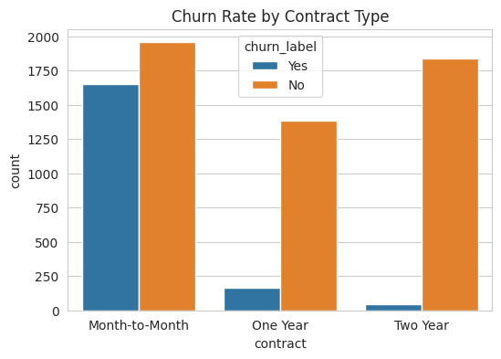

Telecom Churn Analysis · Project Progression
- Part 1 · Data Preparation
Inspect source data, standardize fields, and identify join requirements.
- Part 2 · Visual Analysis
Explore customer characteristics and compare churn across service and contract groups.
- Part 3 · Hypothesis Testing
Compare subgroup churn rates using two-proportion tests.
Project Summary
I joined customer and churn records, then used count plots, histograms, scatterplots, and box plots to investigate how contracts, internet services, and charges relate to churn.
Skills and What I Learned
I learned to distinguish the number of customers who churn from the proportion who churn within each group. I also practiced choosing charts for categorical and numerical variables and validating customer IDs before joining tables.
Key Findings
In the supplied data, month-to-month customers had a churn rate of 45.8%, compared with 10.7% for one-year contracts and 2.5% for two-year contracts. Fiber-optic customers had a rate of 40.7%. These associations identify groups for further investigation.
The verified churn rate for internet-service customers is 31.8%, compared with 7.4% for customers without internet service.
